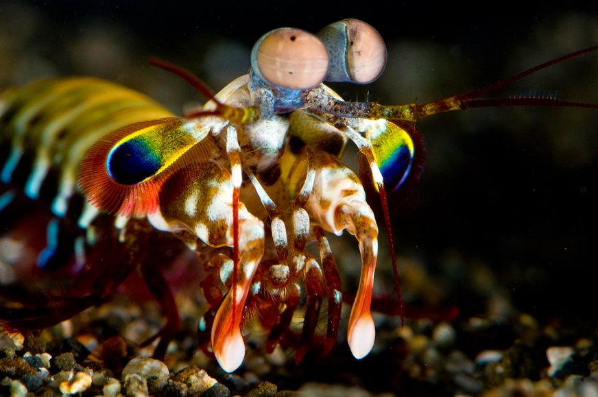

Interesting Facts About Mantis Shrimp
- The mantis shrimp can punch with the speed of a .22 caliber bullet
- When a mantis shrimp hits its target, the velocity causes water to vaporize, then implode with a sharp bang, extremely high heat, and a flash of light—all of which is felt by the prey animal as an additional blow.
- When the striking limb of a mantis shrimp is not in use, it lies folded under the animal’s body, compressing a saddle-shaped spring that drives the animals stupendous strikes.
- The animal’s eyes can see a huge variety of light wavelengths, including those in the ultraviolet spectrum.
- They're helping scientists build a better body armour.